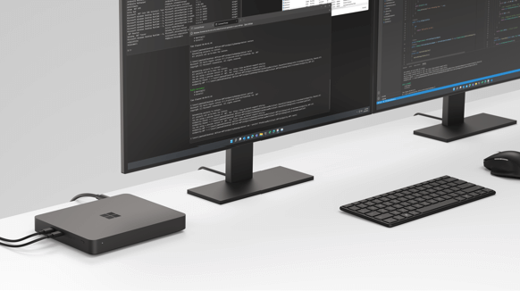

Windows Dev Kit 2023
The Windows Dev Kit 2023 (code name “Project Volterra”) offered Windows developers one of the first opportunities to support development and testing on a device with a Neural Processing Unit (NPU) that provides best-in-class AI computing capacity, multiple ports, and a stackable design for desktops and rack deployment. This dev kit was purpose-built to develop, debug, and test native Windows apps for Arm.
Windows Dev Kit 2023 is no longer available to purchase new, but now you can find Copilot+ PCs offering NPUs and the latest in AI features and computing capacity.
Device specifics
- 32GB LPDDR4x RAM and 512GB fast NVMe storage
- Snapdragon® 8cx Gen 3 compute platform
- Ports: 3x USB-A, 2x USB-C, Mini-Display (HBR2 support), Ethernet (RJ45)
- Made with 20% recycled ocean plastic

Device set up
When the device is turned on and connects to the Internet for the first time, follow the getting started prompts and configuration for Windows Update to ensure the latest software is running on the device.
Identify buttons and external ports
With the device flat on the table, the 3 buttons on the left side of the device, from left to right, are:
- Boot to USB button: Hold the Power button + the Boot to USB button to boot to the USB-C thumb drive. This method can be used to re-image the device with the latest Recovery Image.
- UEFI button: Hold the Power button + the UEFI button to boot into the UEFI menu. (USB-C monitor connections are not compatible when exploring UEFI.)
- Power button
All external ports will be available after the device boots into Windows 11 including:
- RJ45 for ethernet
- 3 x USB-A ports
- 2 x USB-C ports
- Bluetooth & WiFi
The device supports up to three displays by using the mDP port and the two USB-C ports.
Note
Unified Extensible Firmware Interface (UEFI) replaces the standard basic input/output system (BIOS) with new features including faster startup and improved security. You can use UEFI to manage the firmware features on your device.
Set up power
The dev kit includes a 90W power supply. Attach the power supply to the back on the far left of the device.
- The device will default into "Connected Standby Mode" when not in use. You can choose to hibernate the device using OS controls.
- Fan control is supported and controlled by firmware. The Fan will come on as needed to manage thermal load.
- There is no battery on the device, hence the system will only run on AC. There is no DC mode to test against.
Set up display - How to connect monitors
For the best experience, we recommend you use the mDP port as your main display for setting up this device. Until the device is booted into Windows, all display output defaults to the monitor connected to the mDP port.
Scenarios that will require you to use the mDP port include:
- Seeing the startup logo when turning on the device.
- Booting into the UEFI to change firmware settings.
- Installing the recovery image for the device, downloaded from the Recovery Image page.
- BitLocker processes (such as a recovery key prompt or a pre-boot PIN).
- Any Windows OS boot (startup) activity that requires seeing something on the screen before Windows loads, like a Windows startup error or a bug-check boot loop.
- Windows Automatic Recovery.
- Booting into Windows Recovery Environment (WinRE) or Windows PE (WinPE) using a USB boot disk.
- Taking ownership of firmware using SEMM.
Requirements and notes for using Windows Developer Kit device display ports:
- If the only display connected to the device is USB-C, if you don’t use the mDP port (as noted above), you won't see a startup screen output when you turn on the device until Windows is booted. The Windows boot process should take ~25 seconds.
- If connecting an HDMI or a DVI monitor to the mDP port, an active mini-DP to HDMI or active mini-DP to DVI adapter is required. *If the connection is not working, you may be using a passive adapter or a cable with a passive adapter built in. Cables should be 2m/6ft or less.
- When connecting an external keyboard or mouse, use the USB-A ports, not USB-C. Using USB-C to connect a keyboard or mouse will only work intermittently.
| Ports | Transmission Mode | Max Data Speed | Supported Displays (max resolution) | Comments |
|---|---|---|---|---|
| mDP | HBR2 | 4 lane x 5.4 Gbps/lane | SST: 3840 x 2160 @ 60Hz, MST: (x2) 2560 x 1600 @ 60Hz | Default monitor port to boot with UEFI menu |
| USB-C (x2) | HBR3 | 4 lane x 8.1 Gbps/lane | SST: 5120x2880 @ 60Hz, SST: 4096x2160 @ 60Hz, MST: (x2) 3840x2160 @ 60Hz (RB2), MST: (x2) 2560x1600 @ 60Hz (CVT, RB) | Default monitor port to boot without UEFI menu |
Install Arm-native developer tools
A fully Arm-native suite of developer tools are available for installing on Windows 11, including:
Visual Studio 2022 17.4 for Arm64
This is the first native Arm64 version of Visual Studio available with workloads enabled for desktop development with C++ (for MSBuild-based projects), .NET desktop development, web development, game development, and Node.js development and also includes support for Windows SDK and Win App SDK components (Win UI).
-
Native support for Arm64 is available starting with .NET 6, along with the .NET Framework 4.8.1 runtime and SDK, and that support has been extended in .NET 7. Read more about Arm64 performance improvements in .NET 7.
-
VS Code has supported an Arm64 architecture since the September 2020 version 1.50 release, including extensions for Remote Development.
Bringing together local compute on the CPU, GPU, and NPU and cloud compute with Azure, including:
ONNX Runtime + Windows Dev Kit 2023 = NPU powered AI
Unlock the NPU power to accelerate AI/ML workloads using ONNX Runtime with frameworks like PyTorch or TensorFlow - get started with these instructions and tutorials.
Qualcomm developer network: Windows on Snapdragon
Learn more about the Snapdragon compute platform that powers Windows on Snapdragon® devices with native AArch64 (64-bit Arm) app support. You will also find a link to download the Qualcomm Neural Processing SDK for Windows. The Qualcomm® Neural Processing SDK is engineered to help developers save time and effort in optimizing performance of trained neural networks on devices with Qualcomm® AI products.
QNN Execution Provider for ONNX Runtime
The QNN Execution Provider for ONNX Runtime enables hardware accelerated execution on Qualcomm chipsets. It uses the Qualcomm AI Engine Direct SDK (QNN SDK) to construct a QNN graph from an ONNX model which can be executed by a supported accelerator backend library.
Azure Virtual Machines with Ampere Altra Arm-based processors
Engineered to efficiently run scale-out workloads, web servers, application servers, open-source databases, cloud-native as well as rich .NET applications, Java applications, gaming servers, media servers, and more.
Support for building Arm-native apps and porting existing x64 apps is also available, including:
-
Arm64EC (“Emulation Compatible”) is a new application binary interface (ABI) enabling you to build new native apps or incrementally transition existing x64 apps to take advantage of the native speed and performance possible with Arm-powered devices, including better power consumption, battery life, and accelerated AI & ML workloads.
-
Arm64X is a new type of binary that can contain both the classic Arm64 code and Arm64EC code together, making it a particularly good fit for middleware or plugins that may be used by both ABIs.
Additional developer tools supported by Windows 11 on Arm, include:
-
Enabling Linux distributions to be installed on Windows without the overhead of a traditional virtual machine or dual-boot setup.
-
A modern way to run multiple command lines side-by-side in tabs or panes, fully customizable with a GPU-accelerated text rendering engine and command palette.
-
Offering a comprehensive package manager solution that consists of a command line tool (winget) and set of services for installing applications that will choose the best available package based on your hardware architecture.
-
A set of utilities for power users to tune and streamline their Windows experience for greater productivity, including the FancyZones window manager, a keyboard manager, mouse utilities, PowerRename, and more.
-
Enabling Windows 11 to run Android applications that are available in the Amazon Appstore.
Support
For hardware or warranty support with your Windows on Arm developer kit, open a support request on the Support for business services hub page.
FAQs
How do I set up a recovery drive?
To create a USB recovery drive in order to capture the default device state to return to as needed, you will need an empty 16gb USB drive. (This process will erase any data already stored on the drive.)
In the search box on the task bar, search for Create a recovery drive. After selecting, you may be asked to enter an admin password or confirm your choice.
When the tool opens, ensure Back up system files to the recovery drive is selected. Select Next.
Connect a USB drive, select it, select Next, and then Create. Many files will be copied to the recovery drive, so this will take some time.
To boot your dev kit device from a recovery drive:
Connect your USB drive and then hold the Power button + the UEFI button to boot into UEFI menu.
Once in UEFI, use the external USB-A keyboard or mouse to navigate to the Boot Configuration menu.
Double-click on USB Storage to boot to the USB key.
How do I update a driver to work on a Windows 11 Arm-based PC?
Drivers for hardware, games, and apps may only work if they're designed for a Windows 11 Arm-based PC. Check directly with the organization that developed the driver to find relevant Arm64 updates.
Does this device support assistive technology?
Windows 11 provides built-in accessibility features that help you do more on your device, in addition to assistive technology apps in the Microsoft Store, such as the OneStep Reader or the Read &Write extension for Microsoft Edge. NVDA also offers a Windows 11 Arm-based screen reader (see the NV Access download site). Check the Microsoft Store or contact your assistive software vendor to see if your preferred apps are available for a Windows 11 Arm-based PC.
Where can I download a recovery image to reset Windows Developer Kit 2023 to the factory condition?
The Recovery Image page offers an image specifically for "Windows Dev Kit 2023". You will need to enter the device Serial Number.
Are custom OS images supported?
No, currently custom operating system images are not supported on Microsoft Arm devices. Only the Windows OS image provided on the device when purchased is supported. This image can be reinstalled if necessary using the downloadable recovery image on the Recovery Image page.
Where can I see Windows Dev Kit?
While no longer available to purchase through Microsoft Store, you can see the device demo video below.
To learn more, see FAQs for Windows Arm-based PCs.